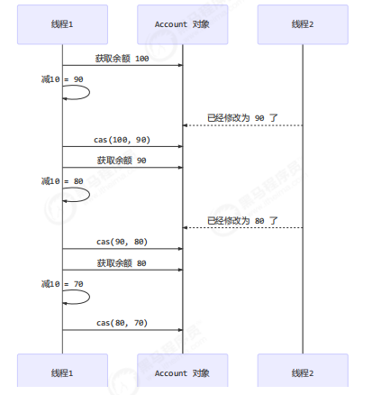
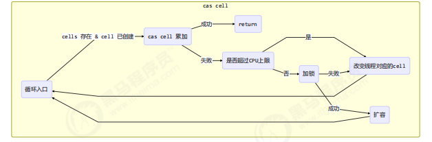

本章内容
CAS 与 volatile
原子整数
原子引用
原子累加器
Unsafe
1. 问题提出 有如下需求，保证 account.withdraw 取款方法的线程安全
1 2 3 4 5 6 7 8 9 10 11 12 13 14 15 16 17 18 19 20 21 22 23 24 25 26 27 28 29 30 31 32 33 34 35 36 package com.java.demo.nolock.problem;import java.util.ArrayList;import java.util.List;public interface Account Integer getBalance () ; void withdraw (Integer amount) static void demo (Account account) List<Thread> ts = new ArrayList<>(); long start = System.nanoTime(); for (int i = 0 ; i < 1000 ; i++) { ts.add(new Thread(() -> { account.withdraw(10 ); })); } ts.forEach(Thread::start); ts.forEach(t -> { try { t.join(); } catch (InterruptedException e) { e.printStackTrace(); } }); long end = System.nanoTime(); System.out.println(account.getBalance() + " cost: " + (end-start)/1000_000 + " ms" ); } }
原有实现并不是线程安全的
1 2 3 4 5 6 7 8 9 10 11 12 13 14 15 16 17 18 19 20 21 package com.java.demo.nolock.problem;import lombok.AllArgsConstructor;@AllArgsConstructor public class AccountUnsafe implements Account private Integer balance; @Override public Integer getBalance () return this .balance; } @Override public void withdraw (Integer amount) this .balance -= amount; } }
执行测试代码
1 2 3 4 public static void main (String[] args) Account account = new AccountUnsafe(10000 ); Account.demo(account); }
某次的执行结果
1 2 3 320 cost: 164 ms Process finished with exit code 0
为什么不安全 withdraw 方法
1 2 3 public void withdraw (Integer amount) balance -= amount; }
对应的字节码
1 2 3 4 5 6 7 8 9 ALOAD 0 // <- this ALOAD 0 GETFIELD cn/itcast/AccountUnsafe.balance : Ljava/lang/Integer; // <- this.balance INVOKEVIRTUAL java/lang/Integer.intValue ()I // 拆箱 ALOAD 1 // <- amount INVOKEVIRTUAL java/lang/Integer.intValue ()I // 拆箱 ISUB // 减法 INVOKESTATIC java/lang/Integer.valueOf (I)Ljava/lang/Integer; // 结果装箱 PUTFIELD cn/itcast/AccountUnsafe.balance : Ljava/lang/Integer; // -> this.balance
多线程执行流程
1 2 3 4 5 6 7 8 9 10 11 12 13 14 15 16 17 18 19 20 ALOAD 0 // thread-0 <- this ALOAD 0 GETFIELD cn/itcast/AccountUnsafe.balance // thread-0 <- this.balance INVOKEVIRTUAL java/lang/Integer.intValue // thread-0 拆箱 ALOAD 1 // thread-0 <- amount INVOKEVIRTUAL java/lang/Integer.intValue // thread-0 拆箱 ISUB // thread-0 减法 INVOKESTATIC java/lang/Integer.valueOf // thread-0 结果装箱 PUTFIELD cn/itcast/AccountUnsafe.balance // thread-0 -> this.balance ALOAD 0 // thread-1 <- this ALOAD 0 GETFIELD cn/itcast/AccountUnsafe.balance // thread-1 <- this.balance INVOKEVIRTUAL java/lang/Integer.intValue // thread-1 拆箱 ALOAD 1 // thread-1 <- amount INVOKEVIRTUAL java/lang/Integer.intValue // thread-1 拆箱 ISUB // thread-1 减法 INVOKESTATIC java/lang/Integer.valueOf // thread-1 结果装箱 PUTFIELD cn/itcast/AccountUnsafe.balance // thread-1 -> this.balance
解决思路 锁 首先想到的是给 Account 对象加锁
1 2 3 4 5 6 7 8 9 10 11 12 13 14 15 16 17 18 19 20 21 22 23 24 25 26 package com.java.demo.nolock.problem.solution1;import com.java.demo.nolock.problem.Account;import lombok.AllArgsConstructor;@AllArgsConstructor public class AccountSynchronized implements Account private Integer balance; @Override public Integer getBalance () synchronized (this ){ return this .balance; } } @Override public void withdraw (Integer amount) synchronized (this ){ this .balance -= amount; } } }
某次执行结果
无锁 1 2 3 4 5 6 7 8 9 10 11 12 13 14 15 16 17 18 19 20 21 22 23 24 25 26 27 28 29 30 31 32 33 package com.java.demo.nolock.problem.solution2;import com.java.demo.nolock.problem.Account;import lombok.AllArgsConstructor;import java.util.concurrent.atomic.AtomicInteger;@AllArgsConstructor public class AccountCas implements Account private AtomicInteger balance; @Override public Integer getBalance () return this .balance.get(); } @Override public void withdraw (Integer amount) while (true ){ int prev = balance.get(); int next = prev - amount; if (balance.compareAndSet(prev, next)){ break ; } } } }
某次的执行结果
2. CAS 与 volatile 前面看到的 AtomicInteger 的解决方法，内部并没有用锁来保护共享变量的线程安全。那么它是如何实现的呢？
1 2 3 4 5 6 7 8 9 10 11 12 13 14 15 16 17 18 19 public void withdraw (Integer amount) while (true ){ int prev = balance.get(); int next = prev - amount; if (balance.compareAndSet(prev, next)){ break ; } } }
其中的关键是 compareAndSet，它的简称就是 CAS（也有 Compare And Swap 的说法），它必须是原子操作 。

❗注意
其实 CAS 的底层是 lock cmpxchg 指令（X86 架构），在单核 CPU 和多核 CPU 下都能够保证【比较-交
在多核状态下，某个核执行到带 lock 的指令时，CPU 会让总线锁住，当这个核把此指令执行完毕，再
慢动作分析 1 2 3 4 5 6 7 8 9 10 11 12 13 14 15 16 17 18 19 20 21 22 23 24 25 26 27 28 29 30 31 32 33 34 35 36 37 38 39 package com.java.demo.nolock.problem;import lombok.extern.slf4j.Slf4j;import java.util.concurrent.atomic.AtomicInteger;@Slf 4j(topic = "c.SlowMotion" )public class SlowMotion public static void main (String[] args) AtomicInteger balance = new AtomicInteger(10000 ); int mainPrev = balance.get(); log.debug("try get {}" , mainPrev); new Thread(() -> { sleep(1000 ); int prev = balance.get(); balance.compareAndSet(prev, 9000 ); log.debug(balance.toString()); }, "t1" ).start(); sleep(2000 ); log.debug("try set 8000..." ); boolean isSuccess = balance.compareAndSet(mainPrev, 8000 ); log.debug("is success ? {}" , isSuccess); if (!isSuccess) { mainPrev = balance.get(); log.debug("try set 8000..." ); isSuccess = balance.compareAndSet(mainPrev, 8000 ); log.debug("is success ? {}" , isSuccess); } } private static void sleep (int millis) try { Thread.sleep(millis); } catch (InterruptedException e) { e.printStackTrace(); } } }
输出结果
1 2 3 4 5 6 10:36:44 [main] c.SlowMotion - try get 10000 10:36:45 [t1] c.SlowMotion - 9000 10:36:46 [main] c.SlowMotion - try set 8000... 10:36:46 [main] c.SlowMotion - is success ? false 10:36:46 [main] c.SlowMotion - try set 8000... 10:36:46 [main] c.SlowMotion - is success ? true
volatile 获取共享变量时，为了保证该变量的可见性，需要使用 volatile 修饰。volatile 变量都是直接操作主存。即一个线程对 volatile 变量的修改，对另一个线程可见。
注意 volatile 仅仅保证了共享变量的可见性，让其它线程能够看到最新值，但不能解决指令交错问题（不能保证原子性）CAS 必须借助 volatile 才能读取到共享变量的最新值来实现比较并交换 的效果
为什么无锁效率高 无锁情况下，即使重试失败，线程始终在高速运行，没有停歇,而 synchronized 会让线程在没有获得锁的时候，发生上下文切换，进入阻塞。打个比喻线程就好像高速跑道上的赛车，高速运行时，速度超快，一旦发生上下文切换，就好比赛车要减速、熄火，等被唤醒又得重新打火、启动、加速… 恢复到高速运行，代价比较大;CPU 的支持，CPU 在这里就好比高速跑道，没有额外的跑道，线程想高速运行也无从谈起，虽然不会进入阻塞，但由于没有分到时间片，仍然会进入可运行状态，还
CAS 的特点 结合 CAS 和 volatile 可以实现无锁并发，适用于线程数少、多核 CPU 的场景下。
CAS 是基于乐观锁的思想：最乐观的估计，不怕别的线程来修改共享变量，就算改了也没关系，我吃亏点再重试呗。synchronized 是基于悲观锁的思想：最悲观的估计，得防着其它线程来修改共享变量，我上了锁你们都别想改，我改完了解开锁，你们才有机会。CAS 体现的是无锁并发、无阻塞并发，请仔细体会这两句话的意思
因为没有使用 synchronized，所以线程不会陷入阻塞，这是效率提升的因素之一
但如果竞争激烈，可以想到重试必然频繁发生，反而效率会受影响3. 原子整数 J.U.C 并发包提供了：
AtomicBoolean
AtomicInteger
AtomicLong1 2 3 4 5 6 7 8 9 10 11 12 13 14 15 16 17 18 19 20 21 22 23 24 25 26 27 28 29 30 31 32 33 34 35 package com.java.demo.nolock.atomic;import java.util.concurrent.atomic.AtomicInteger;public class AtomicIntegerTest public static void main (String[] args) AtomicInteger i = new AtomicInteger(0 ); System.out.println(i.getAndIncrement()); System.out.println(i.incrementAndGet()); System.out.println(i.decrementAndGet()); System.out.println(i.getAndDecrement()); System.out.println(i.getAndAdd(5 )); System.out.println(i.addAndGet(-5 )); System.out.println(i.getAndUpdate(p -> p - 2 )); System.out.println(i.updateAndGet(p -> p + 2 )); System.out.println(i.getAndAccumulate(10 , (p, x) -> p + x)); System.out.println(i.accumulateAndGet(-10 , (p, x) -> p + x)); } }
4.原子引用 为什么需要原子引用类型？
AtomicReference
AtomicMarkableReference
AtomicStampedReference安全实现-使用 CAS 1 2 3 4 5 6 7 8 9 10 11 12 13 14 15 16 17 18 19 20 21 22 23 24 25 26 27 28 29 30 31 32 33 34 35 36 37 package com.java.demo.nolock.problem;import java.math.BigDecimal;import java.util.ArrayList;import java.util.List;public interface AccountDecimal BigDecimal getBalance () ; void withdraw (BigDecimal amount) static void demo (AccountDecimal account) List<Thread> ts = new ArrayList<>(); long start = System.nanoTime(); for (int i = 0 ; i < 1000 ; i++) { ts.add(new Thread(() -> { account.withdraw(new BigDecimal(10 )); })); } ts.forEach(Thread::start); ts.forEach(t -> { try { t.join(); } catch (InterruptedException e) { e.printStackTrace(); } }); long end = System.nanoTime(); System.out.println(account.getBalance() + " cost: " + (end-start)/1000_000 + " ms" ); } }
1 2 3 4 5 6 7 8 9 10 11 12 13 14 15 16 17 18 19 20 21 22 23 24 25 26 27 28 29 30 31 package com.java.demo.nolock.problem.solution3;import com.java.demo.nolock.problem.AccountDecimal;import java.math.BigDecimal;import java.util.concurrent.atomic.AtomicReference;public class AccountBigDecimal implements AccountDecimal private AtomicReference<BigDecimal> balance; public AccountBigDecimal (BigDecimal balance) this .balance = new AtomicReference<>(balance); } @Override public BigDecimal getBalance () return this .balance.get(); } @Override public void withdraw (BigDecimal amount) while (true ){ BigDecimal prev = this .balance.get(); BigDecimal next = prev.subtract(amount); if (balance.compareAndSet(prev,next)){ break ; } } } }
1 2 AccountDecimal accountBigDecimal = new AccountBigDecimal(new BigDecimal("10000" )); AccountDecimal.demo(accountBigDecimal);
ABA 问题及解决 ABA 问题 1 2 3 4 5 6 7 8 9 10 11 12 13 14 15 16 17 18 19 20 21 22 23 24 25 26 27 28 29 30 31 32 33 package com.java.demo.nolock.aba;import lombok.extern.slf4j.Slf4j;import java.util.concurrent.atomic.AtomicReference;import static java.lang.Thread.sleep;@Slf 4j(topic = "c.ABATest" )public class ABATest static AtomicReference<String> reference = new AtomicReference<>("A" ); public static void main (String[] args) throws InterruptedException log.debug("main start..." ); String prev = reference.get(); other(); sleep(1 ); log.debug("change A->C {}" , reference.compareAndSet(prev, "C" )); } private static void other () throws InterruptedException new Thread(() -> { log.debug("change A->B {}" , reference.compareAndSet(reference.get(), "B" )); }, "t1" ).start(); sleep(1 ); new Thread(() -> { log.debug("change B->A {}" , reference.compareAndSet(reference.get(), "A" )); }, "t2" ).start(); } }
输出：
1 2 3 4 13 :20 :06 [main] c.ABATest - main start...13 :20 :06 [t1] c.ABATest - change A->B true 13 :20 :06 [t2] c.ABATest - change B->A true 13 :20 :06 [main] c.ABATest - change A->C true
主线程仅能判断出共享变量的值与最初值 A 是否相同，不能感知到这种从 A 改为 B 又 改回 A 的情况，如果主线程希望：AtomicStampedReference
1 2 3 4 5 6 7 8 9 10 11 12 13 14 15 16 17 18 19 20 21 22 23 24 25 26 27 static AtomicStampedReference<String> ref = new AtomicStampedReference<>("A" , 0 );public static void main (String[] args) throws InterruptedException log.debug("main start..." ); String prev = ref.getReference(); int stamp = ref.getStamp(); log.debug("版本 {}" , stamp); other(); sleep(1 ); log.debug("change A->C {}" , ref.compareAndSet(prev, "C" , stamp, stamp + 1 )); } private static void other () new Thread(() -> { log.debug("change A->B {}" , ref.compareAndSet(ref.getReference(), "B" , ref.getStamp(), ref.getStamp() + 1 )); log.debug("更新版本为 {}" , ref.getStamp()); }, "t1" ).start(); sleep(0.5 ); new Thread(() -> { log.debug("change B->A {}" , ref.compareAndSet(ref.getReference(), "A" , ref.getStamp(), ref.getStamp() + 1 )); log.debug("更新版本为 {}" , ref.getStamp()); }, "t2" ).start(); }
输出为：
1 2 3 4 5 6 7 13 :40 :30 [main] c.AtomicStampedReferenceTest - main start...13 :40 :30 [main] c.AtomicStampedReferenceTest - 版本 0 13 :40 :30 [t1] c.AtomicStampedReferenceTest - change A->B true 13 :40 :30 [t1] c.AtomicStampedReferenceTest - 更新版本为 1 13 :40 :30 [t2] c.AtomicStampedReferenceTest - change B->A true 13 :40 :30 [t2] c.AtomicStampedReferenceTest - 更新版本为 2 13 :40 :30 [main] c.AtomicStampedReferenceTest - change A->C false
AtomicStampedReference 可以给原子引用加上版本号，追踪原子引用整个的变化过程，如： A -> B -> A ->
AtomicMarkableReference
1 2 3 4 5 6 7 8 9 10 11 package com.java.demo.nolock.aba.atomicmarkablereference;import lombok.AllArgsConstructor;import lombok.Data;@AllArgsConstructor @Data public class GarbageBag private String desc; }
1 2 3 4 5 6 7 8 9 10 11 12 13 14 15 16 17 18 19 20 21 22 23 24 25 26 27 28 29 package com.java.demo.nolock.aba.atomicmarkablereference;import lombok.extern.slf4j.Slf4j;import java.util.concurrent.atomic.AtomicMarkableReference;@Slf 4j(topic = "c.AtomicMarkableReferenceTest" )public class AtomicMarkableReferenceTest public static void main (String[] args) throws InterruptedException GarbageBag bag = new GarbageBag("装满了垃圾" ); AtomicMarkableReference<GarbageBag> ref = new AtomicMarkableReference<>(bag, true ); log.debug("主线程 start..." ); GarbageBag prev = ref.getReference(); log.debug(prev.toString()); new Thread(() -> { log.debug("打扫卫生的线程 start..." ); bag.setDesc("空垃圾袋" ); while (!ref.compareAndSet(bag, bag, true , false )) {} log.debug(bag.toString()); }).start(); Thread.sleep(1000 ); log.debug("主线程想换一只新垃圾袋？" ); boolean success = ref.compareAndSet(prev, new GarbageBag("空垃圾袋" ), true , false ); log.debug("换了么？" + success); log.debug(ref.getReference().toString()); } }
输出：
1 2 3 4 5 6 7 14:18:41 [main] c.AtomicMarkableReferenceTest - 主线程 start... 14:18:41 [main] c.AtomicMarkableReferenceTest - GarbageBag(desc=装满了垃圾) 14:18:41 [Thread-0] c.AtomicMarkableReferenceTest - 打扫卫生的线程 start... 14:18:41 [Thread-0] c.AtomicMarkableReferenceTest - GarbageBag(desc=空垃圾袋) 14:18:42 [main] c.AtomicMarkableReferenceTest - 主线程想换一只新垃圾袋？ 14:18:42 [main] c.AtomicMarkableReferenceTest - 换了么？false 14:18:42 [main] c.AtomicMarkableReferenceTest - GarbageBag(desc=空垃圾袋)
可以注释掉打扫卫生线程代码，再观察输出。
5. 原子数组
AtomicIntegerArray
AtomicLongArray
AtomicReferenceArray
1 2 3 4 5 6 7 8 9 10 11 12 13 14 15 16 17 18 19 20 21 22 23 24 25 26 27 28 29 30 31 32 33 34 35 36 37 38 39 40 41 42 43 44 45 46 47 48 package com.java.demo.nolock.atomic;import java.util.ArrayList;import java.util.Arrays;import java.util.List;import java.util.function.BiConsumer;import java.util.function.Consumer;import java.util.function.Function;import java.util.function.Supplier;public class AutomicArrayTest private static <T> void demo ( Supplier<T> arraySupplier, Function<T, Integer> lengthFun, BiConsumer<T, Integer> putConsumer, Consumer<T> printConsumer ) List<Thread> ts = new ArrayList<>(); T array = arraySupplier.get(); int length = lengthFun.apply(array); for (int i = 0 ; i < length; i++) { ts.add(new Thread(() -> { for (int j = 0 ; j < 10000 ; j++) { putConsumer.accept(array, j%length); } })); } ts.forEach(t -> t.start()); ts.forEach(t -> { try { t.join(); } catch (InterruptedException e) { e.printStackTrace(); } }); printConsumer.accept(array); } }
不安全数组 1 2 3 4 5 6 7 8 public static void main (String[] args) demo( ()->new int [10 ], (array)->array.length, (array, index) -> array[index]++, array-> System.out.println(Arrays.toString(array)) ); }
输出结果
1 [9839 , 9811 , 9824 , 9815 , 9801 , 9804 , 9811 , 9830 , 9828 , 9848 ]
安全数组 1 2 3 4 5 6 demo( ()->new AtomicIntegerArray(10 ), (array)->array.length(), (array, index) -> array.getAndIncrement(index), array-> System.out.println(array) );
输出结果
1 [10000 , 10000 , 10000 , 10000 , 10000 , 10000 , 10000 , 10000 , 10000 , 10000 ]
6. 字段更新器
AtomicReferenceFieldUpdater // 域 字段
AtomicIntegerFieldUpdater
AtomicLongFieldUpdater
利用字段更新器，可以针对对象的某个域（Field）进行原子操作，只能配合 volatile 修饰的字段使用，否则会出现异常。
1 Exception in thread "main" java.lang.IllegalArgumentException: Must be volatile type
1 2 3 4 5 6 7 8 9 10 11 12 13 14 15 16 17 18 19 20 21 22 23 24 25 26 package com.java.demo.nolock.atomic;import lombok.Data;import java.util.concurrent.atomic.AtomicIntegerFieldUpdater;import java.util.concurrent.atomic.AtomicReferenceFieldUpdater;public class AtomicReferenceFieldUpdaterTest public static void main (String[] args) Student student = new Student(); AtomicReferenceFieldUpdater<Student, String> nameUpdater = AtomicReferenceFieldUpdater.newUpdater(Student.class, String.class, "name" ); nameUpdater.compareAndSet(student, null , "奥斯特洛夫斯基" ); AtomicIntegerFieldUpdater<Student> ageUpdater = AtomicIntegerFieldUpdater.newUpdater(Student.class, "age" ); ageUpdater.compareAndSet(student, 0 , 10 ); System.out.println(student); } } @Data class Student volatile String name; volatile int age; }
输出结果
1 Student(name=奥斯特洛夫斯基, age=10 )
7. 原子累加器 累加器性能比较 1 2 3 4 5 6 7 8 9 10 11 12 13 14 15 16 17 18 19 20 21 22 23 24 25 26 27 28 29 30 31 32 33 34 35 36 37 38 39 40 41 42 43 44 package com.java.demo.nolock.atomic;import java.util.ArrayList;import java.util.List;import java.util.concurrent.atomic.AtomicLong;import java.util.concurrent.atomic.LongAdder;import java.util.function.Consumer;import java.util.function.Supplier;public class LongAdderTest public static void main (String[] args) for (int i = 0 ; i < 5 ; i++) { demo(() -> new LongAdder(), adder -> adder.increment()); } for (int i = 0 ; i < 5 ; i++) { demo(() -> new AtomicLong(), adder -> adder.getAndIncrement()); } } private static <T> void demo (Supplier<T> adderSupplier, Consumer<T> action) T adder = adderSupplier.get(); long start = System.nanoTime(); List<Thread> ts = new ArrayList<>(); for (int i = 0 ; i < 40 ; i++) { ts.add(new Thread(() -> { for (int j = 0 ; j < 500000 ; j++) { action.accept(adder); } })); } ts.forEach(t -> t.start()); ts.forEach(t -> { try { t.join(); } catch (InterruptedException e) { e.printStackTrace(); } }); long end = System.nanoTime(); System.out.println(adder + " cost:" + (end - start)/1000_000 ); } }
输出结果
1 2 3 4 5 6 7 8 9 10 20000000 cost:157 20000000 cost:107 20000000 cost:90 20000000 cost:87 20000000 cost:87 20000000 cost:405 20000000 cost:499 20000000 cost:523 20000000 cost:507 20000000 cost:570
性能提升的原因很简单，就是在有竞争时，设置多个累加单元，Therad-0 累加 Cell[0]，而 Thread-1 累加Cell[1]... 最后将结果汇总。这样它们在累加时操作的不同的 Cell 变量，因此减少了 CAS 重试失败，从而提高性能。
源码之 LongAdder LongAdder 是并发大师 @author Doug Lea （大哥李）的作品，设计的非常精巧LongAdder 类有几个关键域
1 2 3 4 5 6 transient volatile Cell[] cells;transient volatile long base;transient volatile int cellsBusy
CAS 锁 1 2 3 4 5 6 7 8 9 10 11 12 13 14 15 public class LockCas private AtomicInteger state = new AtomicInteger(0 ); public void lock () while (true ) { if (state.compareAndSet(0 , 1 )) { break ; } } } public void unlock () log.debug("unlock..." ); state.set(0 ); } }
测试
1 2 3 4 5 6 7 8 9 10 11 12 13 14 15 16 17 18 19 20 21 22 23 24 public static void main (String[] args) LockCAS lock = new LockCAS(); new Thread(() -> { log.debug("begin..." ); lock.lock(); try { log.debug("lock..." ); sleep(1 ); } catch (InterruptedException e) { throw new RuntimeException(e); } finally { lock.unlock(); } }).start(); new Thread(() -> { log.debug("begin..." ); lock.lock(); try { log.debug("lock..." ); } finally { lock.unlock(); } }).start(); }
输出如下：
1 2 3 4 5 6 22 :27 :52 [Thread-1 ] c.LockCAS - begin...22 :27 :52 [Thread-1 ] c.LockCAS - lock...22 :27 :52 [Thread-1 ] c.LockCAS - unlock...22 :27 :52 [Thread-0 ] c.LockCAS - begin...22 :27 :52 [Thread-0 ] c.LockCAS - lock...22 :27 :52 [Thread-0 ] c.LockCAS - unlock...
原理之伪共享 其中 Cell 即为累加单元
1 2 3 4 5 6 7 8 9 10 11 @sun .misc.Contendedstatic final class Cell volatile long value; Cell(long x) { value = x; } final boolean cas (long prev, long next) return UNSAFE.compareAndSwapLong(this , valueOffset, prev, next); } }
得从缓存说起
从 cpu 到
大约需要的时钟周期
寄存器
1 cycle (4GHz 的 CPU 约为0.25ns)
L1
3~4 cycle
L2
10~20 cycle
L3
40~45 cycle
内存
120~240 cycle
因为 CPU 与 内存的速度差异很大，需要靠预读数据至缓存来提升效率。64 byte（8 个 long）
因为 Cell 是数组形式，在内存中是连续存储的，一个 Cell 为 24 字节（16 字节的对象头和 8 字节的 value），因此缓存行可以存下 2 个的 Cell 对象。这样问题来了：
Core-0 要修改 Cell[0]Core-1 要修改 Cell[1]
无论谁修改成功，都会导致对方 Core 的缓存行失效，比如 Core-0 中 Cell[0]=6000, Cell[1]=8000 要累加 Cell[0]=6001, Cell[1]=8000 ，这时会让 Core-1 的缓存行失效@sun.misc.Contended 用来解决这个问题，它的原理是在使用此注解的对象或字段的前后各增加 128 字节大小的 padding，从而让 CPU 将对象预读至缓存时占用不同的缓存行，这样，不会造成对方缓存行的失效
累加主要调用下面的方法
1 2 3 4 5 6 7 8 9 10 11 12 13 14 15 16 17 18 19 20 21 22 23 24 public void add (long x) Cell[] as; long b, v; int m; Cell a; if ((as = cells) != null || !casBase(b = base, b + x)) { boolean uncontended = true ; if ( as == null || (m = as.length - 1 ) < 0 || (a = as[getProbe() & m]) == null || !(uncontended = a.cas(v = a.value, v + x)) ) { longAccumulate(x, null , uncontended); } } }
add 流程图
1 2 3 4 5 6 7 8 9 10 11 12 13 14 15 16 17 18 19 20 21 22 23 24 25 26 27 28 29 30 31 32 33 34 35 36 37 38 39 40 41 42 43 44 45 46 47 48 49 50 51 52 final void longAccumulate (long x, LongBinaryOperator fn, boolean wasUncontended) int h; if ((h = getProbe()) == 0 ) { ThreadLocalRandom.current(); h = getProbe(); wasUncontended = true ; } boolean collide = false ; for (;;) { Cell[] as; Cell a; int n; long v; if ((as = cells) != null && (n = as.length) > 0 ) { if ((a = as[(n - 1 ) & h]) == null ) { } else if (!wasUncontended) wasUncontended = true ; else if (a.cas(v = a.value, ((fn == null ) ? v + x : fn.applyAsLong(v, x)))) break ; else if (n >= NCPU || cells != as) collide = false ; else if (!collide) collide = true ; else if (cellsBusy == 0 && casCellsBusy()) { continue ; } h = advanceProbe(h); } else if (cellsBusy == 0 && cells == as && casCellsBusy()) { } else if (casBase(v = base, ((fn == null ) ? v + x : fn.applyAsLong(v, x)))) break ; } }
longAccumulate 流程图
每个线程刚进入 longAccumulate 时，会尝试对应一个 cell 对象（找到一个坑位）

获取最终结果通过 sum 方法
1 2 3 4 5 6 7 8 9 10 11 public long sum () Cell[] as = cells; Cell a; long sum = base; if (as != null ) { for (int i = 0 ; i < as.length; ++i) { if ((a = as[i]) != null ) sum += a.value; } } return sum; }
8.Unsafe 概述 Unsafe 对象提供了非常底层的，操作内存、线程的方法，Unsafe 对象不能直接调用，只能通过反射获得
1 2 3 4 5 6 7 8 9 10 11 12 13 14 15 16 17 18 19 20 21 22 package com.java.demo.nolock.atomic;import sun.misc.Unsafe;import java.lang.reflect.Field;public class UnsafeAccessor static Unsafe unsafe; static { try { Field theUnsafe = Unsafe.class.getDeclaredField("theUnsafe" ); theUnsafe.setAccessible(true ); unsafe = (Unsafe) theUnsafe.get(null ); } catch (NoSuchFieldException | IllegalAccessException e) { throw new Error(e); } } static Unsafe getUnsafe () return unsafe; } }
Unsafe 无锁操作 1 2 3 4 5 6 7 8 @Data class Employee volatile int id; volatile String name; }
1 2 3 4 5 6 7 8 9 10 11 12 13 14 15 16 17 18 19 20 21 22 23 24 25 26 package com.java.demo.nolock.atomic;import jdk.internal.misc.Unsafe;import lombok.Data;import lombok.extern.slf4j.Slf4j;import java.lang.reflect.Field;@Slf 4j(topic = "c.UnsafeTest" )public class UnsafeTest public static void main (String[] args) throws NoSuchFieldException Unsafe unsafe = UnsafeAccessor.getUnsafe(); Field id = Employee.class.getDeclaredField("id" ); Field name = Employee.class.getDeclaredField("name" ); long idOffset = UnsafeAccessor.unsafe.objectFieldOffset(id); long nameOffset = UnsafeAccessor.unsafe.objectFieldOffset(name); Employee employee = new Employee(); UnsafeAccessor.unsafe.compareAndExchangeInt(employee, idOffset, 0 , 20 ); UnsafeAccessor.unsafe.compareAndExchangeObject(employee, nameOffset, null , "张三" ); log.info(employee.toString()); } }
输出结果如下
1 11 :39 :58 [main] c.UnsafeTest - Employee(id=20 , name=张三)
在 jdk 11 中使用 jdk.internal.misc.Unsafe 会产生：
1 2 java.lang.UnsupportedOperationException: Reflective setAccessible (true ) disabled； java.lang.IllegalAccessException: class io.netty.util.internal.PlatformDependent0$6 cannot access class jdk.internal.misc.Unsafe (in module java.base) because module java.base does not export jdk.internal.misc to unnamed module @60438a68；
在 vm 参数中添加如下内容即可：
1 --add-opens java.base/jdk.internal.misc=ALL-UNNAMED --illegal-access=warn
使用自定义的 AtomicData 实现之前线程安全的原子整数 Account 实现
1 2 3 4 5 6 7 8 9 10 11 12 13 14 15 16 17 18 19 20 21 22 23 24 25 26 27 28 29 30 31 32 33 34 35 36 37 38 39 package com.java.demo.nolock.atomic;import jdk.internal.misc.Unsafe;import lombok.extern.slf4j.Slf4j;@Slf 4j(topic = "c.AtomicData" )public class AtomicData private volatile int data; static final Unsafe unsafe; static final long DATA_OFFSET; static { unsafe = UnsafeAccessor.getUnsafe(); try { DATA_OFFSET = unsafe.objectFieldOffset(AtomicData.class.getDeclaredField("data" )); } catch (NoSuchFieldException e) { throw new Error(e); } } public AtomicData (int data) this .data = data; } public void decrease (int amount) int oldValue; while (true ) { oldValue = data; if (unsafe.compareAndExchangeInt(this , DATA_OFFSET, oldValue, oldValue - amount) == oldValue) { return ; } } } public int getData () return data; } }
Account 实现
1 2 3 4 5 6 7 8 9 10 11 Account.demo(new Account() { AtomicData atomicData = new AtomicData(10000 ); @Override public Integer getBalance () return atomicData.getData(); } @Override public void withdraw (Integer amount) atomicData.decrease(amount); } });
输出如下：